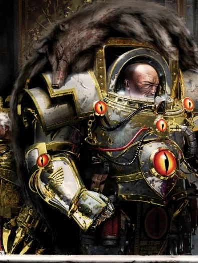

List of Warmasters
| List of Warmasters | |
|---|---|
| Holders of the Warmaster title, 000.M31 to the present | |
 Horus, the first Warmaster, at the Triumph of Ullanor Artwork © Games Workshop | |
| Office | Warmaster, officially designated Lord Solar by the Administratum |
| Inaugural holder | Horus, named at the Ullanor Crusade in 000.M31 |
| Granted by | The Emperor, and in the 41st millennium the High Lords of Terra |
| Current holder | None recorded. The Chaos title is held by Abaddon the Despoiler |
This is a list of the Warmasters, the holders of the title of Warmaster, the highest military command of the Imperium of Mankind. The title was first given to Horus by the Emperor in the last years of the Great Crusade. It was not used again until the High Lords granted it in the 41st millennium, and it has since been rarely granted, because of its ties to the Horus Heresy.[1]
In the 41st millennium the rank is officially proclaimed as Lord Solar, or Lord Commander Solar, when the Senatorum Imperialis confers it. Subordinates still address the holder as Warmaster. The Chaos Gods grant the same title to the Chaos Lord who can unite their servants, and the Warmaster of Chaos is listed separately below.[1]
Holders
[edit]| Dates | Holder | Notes |
|---|---|---|
| 000.M31 – 014.M31 | Horus | The first Warmaster, named at the Triumph of Ullanor. He led the Sons of Horus into the Horus Heresy and was slain at the Siege of Terra. |
| 014.M31 – 392.M41 | Unrecorded | No holder of the title is named in the sources consulted for this period. |
| 392.M41 – 399.M41 | Macharius | Lord Solar and Warmaster of the Macharian Crusade, the greatest Imperial crusade of the 41st millennium. |
| c. 400.M41 | Solon | Successor to Macharius as Lord Solar. Warmaster of the Imperial forces in the Macharian Heresy.[a] |
| 755.M41 – 765.M41 | Slaydo | The first Warmaster of the Sabbat Worlds Crusade, granted the rank by the High Lords in 755.M41. He was killed at Balhaut in 765.M41. |
| 765.M41 onward | Macaroth | Successor to Slaydo as Warmaster of the Sabbat Worlds Crusade. He had distinguished himself at Balhaut in 765.M41. |
| 777.M41 – 786.M41 | Tiber Achilus | Leader of the Achilus Crusade into the Jericho Reach. He died in 786.M41 on a voyage from Alphos to Karlack. |
| 845.M41 | Ingenus | Warmaster in the Dimmamak War. He was captured by Drukhari pirates, after which every high-ranking Astra Militarum general was given a personal bodyguard. |
| Date uncertain | Hokaeto | Supreme Imperial Commander and Warmaster of the Desmaxian Crusade.[b] |
| 999.M41 – present | Abaddon the Despoiler (as Warmaster of Chaos) | Holds the Chaos title, which he claims as the successor of Horus, and led the Thirteen Black Crusades. |
Notes on the office
[edit]The Imperium regards the title as cursed, for it was the rank Horus held when he turned against the Emperor. For this reason the High Lords have granted it rarely, and in the 41st millennium the Senatorum Imperialis has preferred the name Lord Solar. The Administratum keeps the title on its register even when no holder is named.[1]